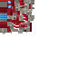

Pico de Guerra

Information
Internal name: war_pickaxe
Alias: wr_pik
Maximum stacksize: 1
Tool properties
Maximum durability: 3514
Breaking blocks decreases its durability by 1
Hitting entities decreases its durability by 1
This item can be repaired using Netherite ingot (1.16 to 1.21) x 1
Special properties
Equipped potion effects:
- Fast digging 1 when in Mainhand